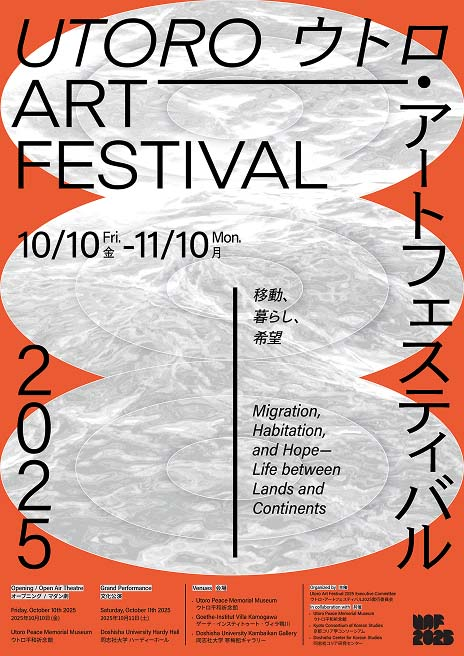
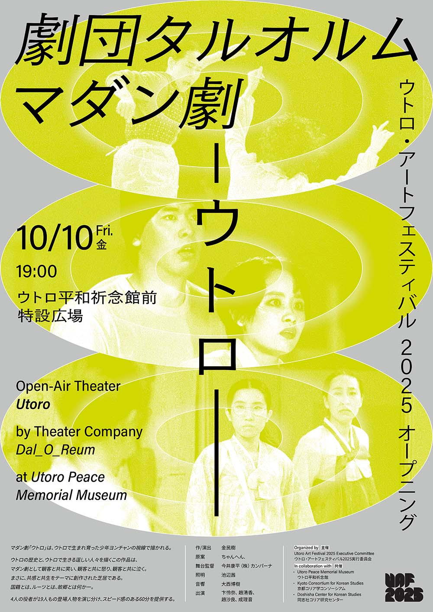

UTORO
ART
FESTIVAL
2025
ウトロ・アート
フェスティバル
2025
The inaugural Utoro Art Festival (UAF2025), a celebration of contemporary art, kicks off on October 10, 2025, and runs until November 10, 2025. This month-long event will span multiple venues across Kyoto City and Uji City, Japan, offering a rich array of exhibitions, performances, lectures, film screening, and symposium. UAF2025 aims to transform the city into a vibrant and meaningful artistic hub, centered around the compelling themes of migration, habitation, and hope. We'll specifically explore how the global phenomenon of migration has shaped our past and will continue to redefine our future. We eagerly anticipate this journey.
- Opening Lecture-Performance
October 10, 2025 I 14:00 - Madangguk UTORO
October 10, 2025 I 19:00-20:00 - Exhibition
October 10-November 10, 2025 - Public Lecture
October 19, 2025 I 17:00-18:30
- Opening Lecture-Performance
October 10, 2025 I 14:00 - Exhibition
October 10-November 10, 2025 - Film Screening
undecided

- Grand Performance : ‘결 Gyeol’ - connected hearts
Kanbaikan Hardy Hall
October 11, 2025 I 15:00-18:00 - Exhibitions
2-1.. Kanbaikan Gallery
October 11-October 22, 2025
2-2. West wall of Fusokan
October 10-November 10, 2025 - International Symposium : Worlds Seen from Utoro
Ryoshinkan RY107
November 10, 2025 I 14:00-17:30
ㅡ Open Air Theater Madangguk ‘UTORO’ / Dal_O_Reum I 19:00-20:00 
ㅡ ikkibawiKrrr (KR)
ㅡ Activist Art for Life & Peace (KR)
ㅡ OKIDO Mio (JP/DE)
LIM Jee-Ae (KR/DE) (Choreography-Concept, Performer)
CHO Hyemi (Z/KR)* (Performer)
ㅡ OKIDO Mio (JP/DE)
ㅡ Linda HAVENSTEIN (DE)
ㅡ TERUYA Yuken (JP/DE)
ㅡ FUJII Hikaru (JP)
ㅡ Nika OBLAK & Primož NOVAK (SI)
ㅡ Alexander STEIG (DE)
Kamudan, COLEGIO SANTANA, Kyoto Meitoku High School, Mayumi Kawaguchi,
Art Unit KOREA x JAPAN, KIM Won Joong, MMM, KIM Hak Kwon * Ticket reservation: https://www.utoro.jp/uaf2025/uaf2025-1011-ticket/
ㅡ Organized by: Doshisha Center for Korean Studies NAKAMURA Ilsong (Journalist), KU Ryang Ok (Lawyer), SOHN KATADA Aki (Ritsumeikan Univ.), MORI Chikako (Doshisha Univ) (Z/KR)* refers to the identity of Zainichi Koreans.
ㅡ Kansai International Airport Terminal 2 (Platform 2)
ㅡ Kansai International Airport Terminal 1 (Platform 8)
ㅡ Airport Limousine Pre-order : kkday klook
2. JR Haruka Express Train はるか : 3,590 yen
ㅡ Kansai International Airport Terminal 1 (2nd floor)
ㅡ Haruka Pre-order : kkday klook
ㅡ (All stops) bound for Yamato-Saidaiji (各停)大和西大寺行 →
Iseda Station 伊勢田駅 (24min.) ㅡ 13 min. walk from West Exit (1.0km)
ㅡ Kyoto Station, Platform2 (All stops) 京都駅 2番ホーム(各停) →
Imadegawa Station 今出川駅 (10 min.) ㅡ 2 min. walk from Exit 3 (140m)
ㅡ A2 platform, bound for Shijo Kawaramachi・Shimogamo Shrine・
Kitaoji Bus Terminal 四条河原町・下鴨神社・北大路バスターミナル 方面
→ Kojinguchi 荒神口 (21min) ㅡ 8 min walk (550m)
2. Kyoto Station City Bus 4 京都駅前 市バス 4 : 230yen
ㅡ A2 platform, bound for Shijo Kawaramachi・Kamigamo Shrine・Nishigamo
Garage 四条河原町・上賀茂神社・西賀茂車庫 方面 → Kojinguchi 荒神口
(21min) ㅡ 8 min walk (550m)
3. Kyoto Station City Bus 7 京都駅前 市バス 7 : 230yen
ㅡ A2 platform, bound for Shijo Kawaramachi・Ginkakuji Temple 四条河原町・
銀閣寺 方面 → Kojinguchi 荒神口 (22min) ㅡ 8 min. walk (550m)
4. Kyoto Station Karasuma Line 京都駅 烏丸線 : 280yen
ㅡ Kyoto Station, Platform2 (All stops) 京都駅 2番ホーム(各停) →
Marutamachi Station 丸太町駅 (7min.) ㅡ 25 min. walk from Exit 1 (1.8 km)
5. Shichijo Station Keihan Main Line 七条駅 京阪本線 : 260yen
ㅡ Shichijo Station, Platform 1 七条駅 1番ホーム (Semi-express) bound for
Demachiyanagi (準急)出町柳行 → Marutamachi Station 神宮丸太町駅 (11 min.)
ㅡ 10 min. walk from Exit 5 (650m)
→ Utoro Peace Memorial Museum ウトロ平和祈念館 1. Demachiyanagi Station Keihan Main Line 出町柳駅 京阪本線 : 640yen
ㅡ (Limited Express) bound for Yodoyabashi (特急)淀屋橋行 → Tanbabashi
Station Keihan Main Line 丹波橋駅 京阪本線 (14min) ⇒⇒ Tanbabashi Station
Kintetsu Kyoto Line 丹波橋駅 近鉄京都線 : (All stops) bound for Shintanabe
(各停)新田辺行 → Iseda Station 伊勢田駅 (24min) ㅡ 13 min walk from West Exit
(1.0km) ㅡ 14 min. walk from Villa Kamogawa to Demachiyanagi Station (900m)
2. Kojinguchi City Bus 7 荒神口 市バス 7 : 590yen
ㅡ Bound for Shijo Kawaramachi・Kyoto Station 四条河原町・京都駅行 → Kyoto
Station 京都駅 (9min) ⇒⇒ Kyoto Station Kintetsu Kyoto Line 京都駅 近鉄京都線
: (All stops) bound for Yamato-Saidaiji (各停)大和西大寺行 → Iseda Station
伊勢田駅 (10min) ㅡ 13 min walk from West Exit (1.0km) ㅡ 9 min walk from Villa
Kamogawa to the bus stop (550 m)
3. Kojinguchi City Bus 205 荒神口 市バス 205 : 590yen
ㅡ Bound for Shijo Kawaramachi・Kyoto Station 四条河原町・京都駅行 →
Kujō_shakomae 九条車庫前 (30min) ⇒⇒ Toji Station, Platform 1 Kintetsu Kyoto
Line 東寺駅 1 番ホーム 近鉄京都線 : (All stops) bound for Yamato-Saidaiji (各停)
大和西大寺行 → Iseda Station 伊勢田駅 (10min) ㅡ 13 min walk from West Exit
(1.0km) ㅡ 9 min walk from Villa Kamogawa to the bus stop (550 m)
* ⇒⇒ Transfer
ㅡ (All stops) bound for Shintanabe (各停)新田辺行 → Iseda Station 伊勢田駅 (30 min.)
ㅡ 13 min. walk from West Exit (1.0km)
ㅡ Bound for Karasuma Imadegawa・Hyakumanben・Gion 烏丸今出川・
百万遍・祇園行 → Kyōdai seimonzen (Kyoto University Main Gate) 京大正
門前 (10min) ㅡ 9 min. walk from the bus stop (700m)
2. Karasuma Imadegawa(Imadegawa Subway Station) Kojinguchi City Bus 59 烏丸今出川 市バス 59 : 230yen
ㅡ Bound for Shijo Kawaramachi・Sanjo Keihan 四条河原町・三条京阪行 →
Kojinguchi 荒神口 (7 min.) ㅡ 8 min. walk from the bus stop (550m)
3. 3. Karasuma Imadegawa(Imadegawa Subway Station) Kojinguchi City Bus 203 烏丸今出川 市バス 203 : 230yen
ㅡ Bound for Demachiyanagi Station・Ginkakuji Temple・Kinrin Depot
烏丸今出川・百万遍・祇園行 → Demachiyanagi ekimae 出町柳駅前 (6 min.)
ㅡ 12 min. walk from the bus stop (900m)
4. 25 min. walk (1.8 km) from Imadegawa campus
2. We use respectful language toward one another.
3. We aim to challenge and change hierarchical
cultures based on fixed gender roles, age, or status.
4. We acknowledge that comments about someone’s body or appearance—even when intended as compliments—can be perceived as evaluative. Participants have the right to express discomfort and request the immediate cessation of sexually humiliating or sexist jokes.
5. We do not ask intrusive questions about others’ private matters, particularly regarding sexuality, romantic relationships, family, health, or religion.
6. We avoid unnecessary physical contact. If any contact causes discomfort, we will immediately stop and offer a sincere apology.
7. We must obtain explicit consent before taking or sharing photographs or videos of others.
9. Anyone accused of sexual misconduct must stop the behavior immediately and offer an apology without making excuses.
10. When UAF2025 receives a report of sexual violence, we will listen with care regardless of the content and provide the victim with necessary information and support. (Reports can be submitted in writing, by phone, electronically, or in person.)
12. Upon receiving a report, the victim and accused will be promptly separated.
13. In accordance with the procedures of the UAF2025 Executive Committee, we will take disciplinary action against the perpetrator without delay.
14. The checklist will be regularly shared and reviewed to ensure the Code of Conduct is upheld at all times.
ㅡ Korea Artists Welfare Foundation (KAWF)
TEL: +82-2-3668-0266 I Email: withu@kawf.kr
Reporting unfair practices / fact-finding and legal support
TEL: +82-2-3668-0200 I Email: sinmungo@kawf.kr
Japan ㅡ The Sexual Crimes Victim Consultation Call: #8103 (Heart-san)
ㅡ The Kyoto-city Arts and Culture Counseling Office (KACCO)
TEL: +81-75-252-2162 / +81-570-090911(Human Rights Hotline)
ㅡ Kyoto Consortium for Korean Studies
ㅡ Doshiha Center for Korean Studies
Head of Curatorial: CHUNG Hyun Joo
Curator(Contemporary Art): NAM Sang Hwa
Curator(Performing Arts): KIM Myosu
Curator(Contemporary Art): Cornelia OßWALD-HOFFMANN
Design SHIM Hangbok
PARK Garam
SAGONG Miyeong
Board member KIM Suhwan
Rebecca JENNISON
Steffi RICHTER
YOO Jae-Hyun
- Goethe-Institut Villa Kamogawa
- Gwangju Culture Foundation
- Babonanum
- Korea Eurasia Road Run
- Podonamu Art Space
- Art5 e.V
- Friedrich-Ebert-Stiftung
- Iskra21
- KIN(Korean international network)
- Humanities Institute of Chonnam National University
- Korean Women’s Group Germany
- Japanische Fraueninitiative Berlin
- Free University of Gwangju
- Pungmulpae Dunum
- INCHEON JOBARTE
- Bupyeong-gu Festival Committee
- Korea Arts Management Service
- Ministry of Culture, Sports and Tourism
- neolook
- Heinrich Böll Stiftung - East Asia Office